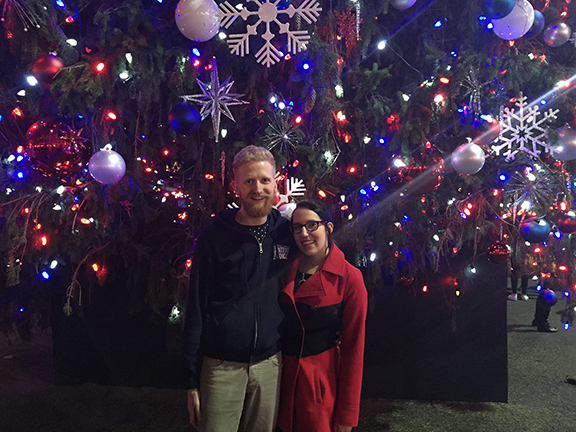

TAYLOR

Taylor Meluch was born and raised in Cleveland, Ohio. She moved to Pittsburgh, Pennsylvania in 2008 to attend design school which lead to her living there for six years in a big house with four best friends and her cat, Ethel. She worked as a Graphic Designer at a marketing company until accepting a position at the 9/11 Tribute Center in New York City.
Taylor is still new to New York City and enjoys exploring new neighborhoods to try and find fun restaurants and bars with her boyfriend Bryan. She lives in the East Village and accepts any recommendations.
Taylor Meluch was born and raised in Cleveland, Ohio. She moved to Pittsburgh, Pennsylvania in 2008 to attend design school which lead to her living there for six years in a big house with four best friends and her cat, Ethel. She worked as a Graphic Designer at a marketing company until accepting a position at the 9/11 Tribute Center in New York City.
Taylor is still new to New York City and enjoys exploring new neighborhoods to try and find fun restaurants and bars with her boyfriend Bryan. She lives in the East Village and accepts any recommendations.